Rebun
Rebun · Hokkaido
Rebun
Highlighted on the Hokkaido map.
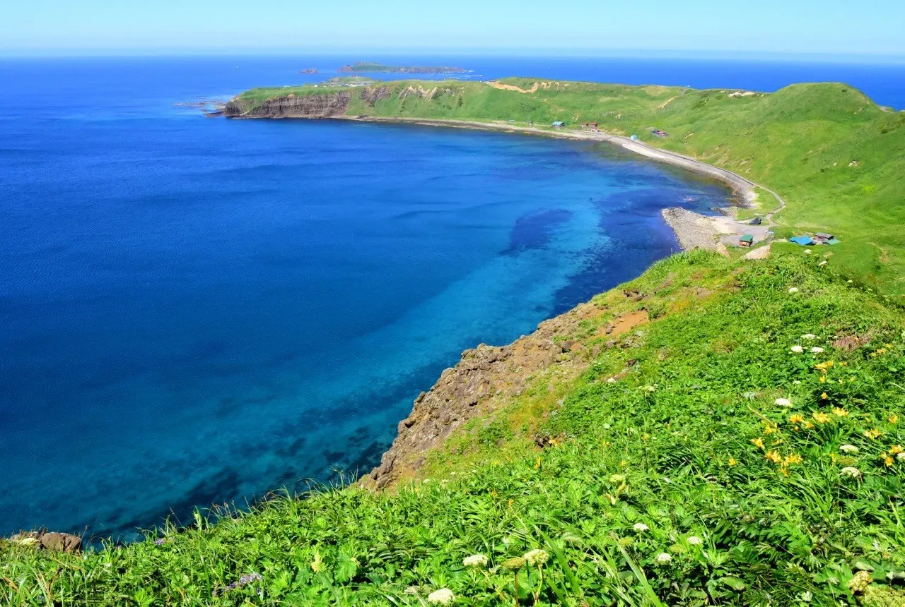
Stay
礼文観光ホテル 咲涼-Saryo-
Rebun Kankou Hoteru Saki Ryou -Saryo
しまのやど れぶんしり－ＲＥＢＵＮＳＨＩＲＥ－
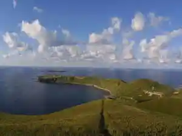
Shimanoyado Rebunshiri - R E B U N S H I R E
ペンションう～に～
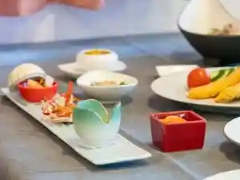
Penshon U ~ Ni ~
Dining
武ちゃん寿し
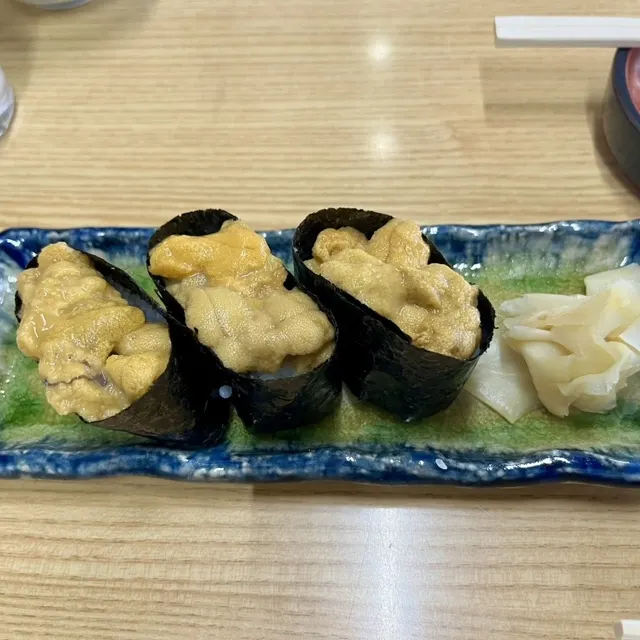
Takeshi Chan Hisashi Shi
桜井
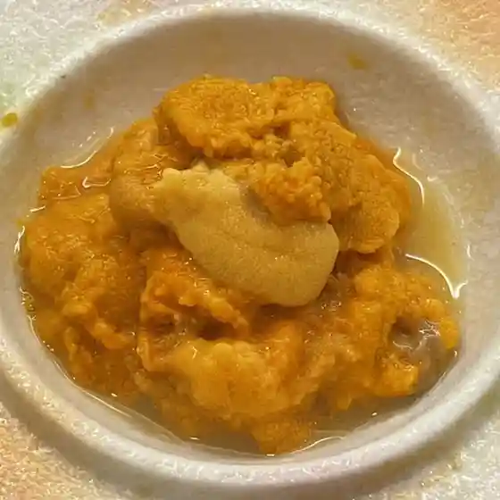
Sakurai
民宿やざわ
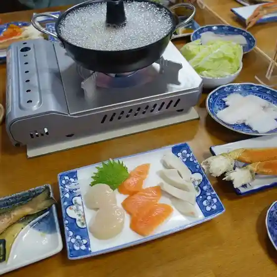
Minshuku Yazawa
福まさ
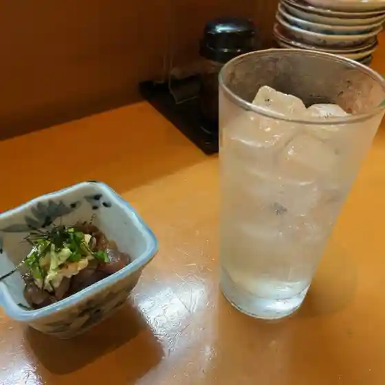
Fuku Masa
プチホテル コリンシアン
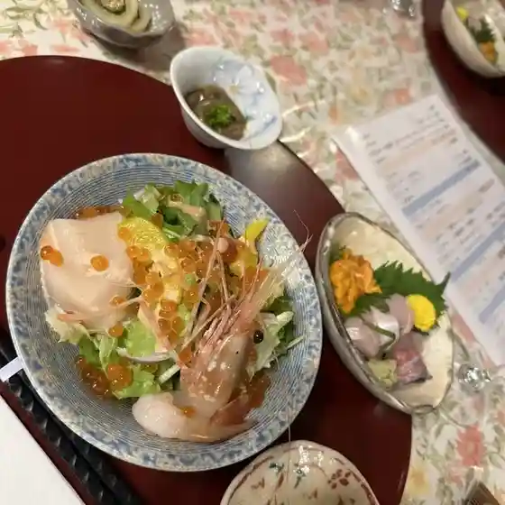
Puchihoteru Korinshian
一番館

Ichiban Kan
海鮮処 かふか
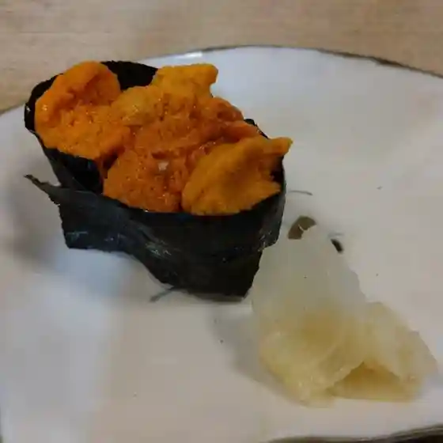
Kaisen Tokoro Kafuka
炉ばた ちどり
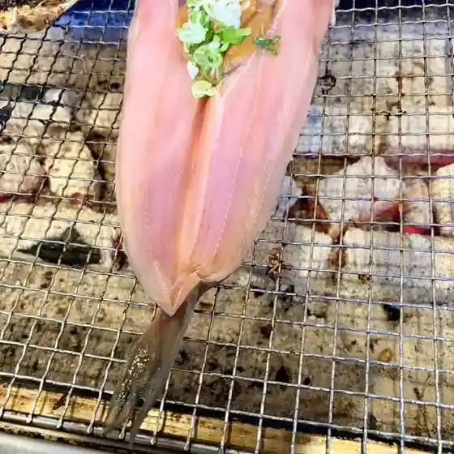
Ro Bata Chidori
昆布本舗 やまじょう
Konbu Honpo Yamajou
はな心
Hana Kokoro
お休み処 談
O Yasumi Tokoro Dan
煙
Kemuri
なぎさ
Nagisa
民宿山光
Minshuku Yama Hikari
スコトン岬観光おみやげ店
Sukoton Misaki Kankou Omiyage Mise
アザラシの見える宿礼文島スコトン岬
Azarashi No Mie Ru Yado Rebun Shima Sukoton Misaki
花れぶん
Hana Rebun
ボルボレッタ
Boruboretta
野崎水産
Nozaki Suisan
いっこん
Ikkon
borboleta
Borboleta
カメとはまなす
Kame Tohamanasu
うにむき体験センター
Unimuki Taiken Sentaa
お食事処 花文
O Shokuji Tokoro Kamon
Sights
Gorota Cape
Gorota Cape
Jizo Iwa
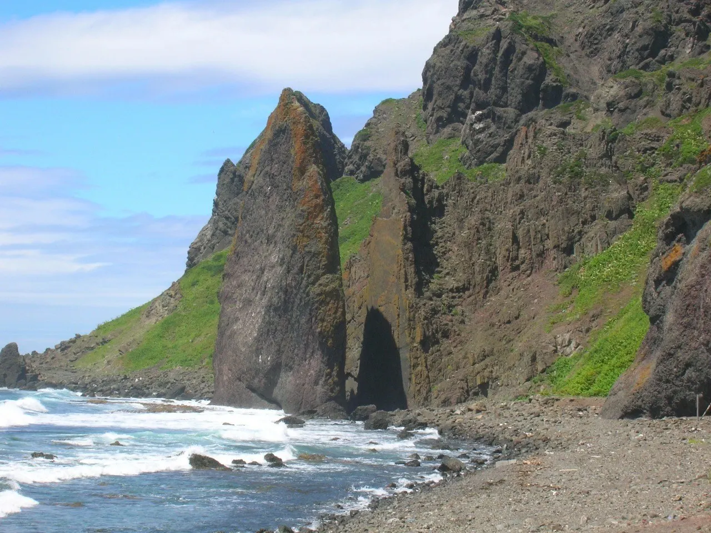
Jizo Iwa
Rebun'atsumoriso Gunsei Chi
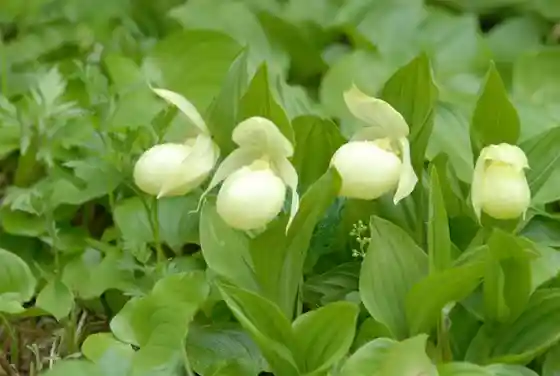
Rebun'atsumoriso Gunsei Chi
Rebun Kozan Botanical Garden
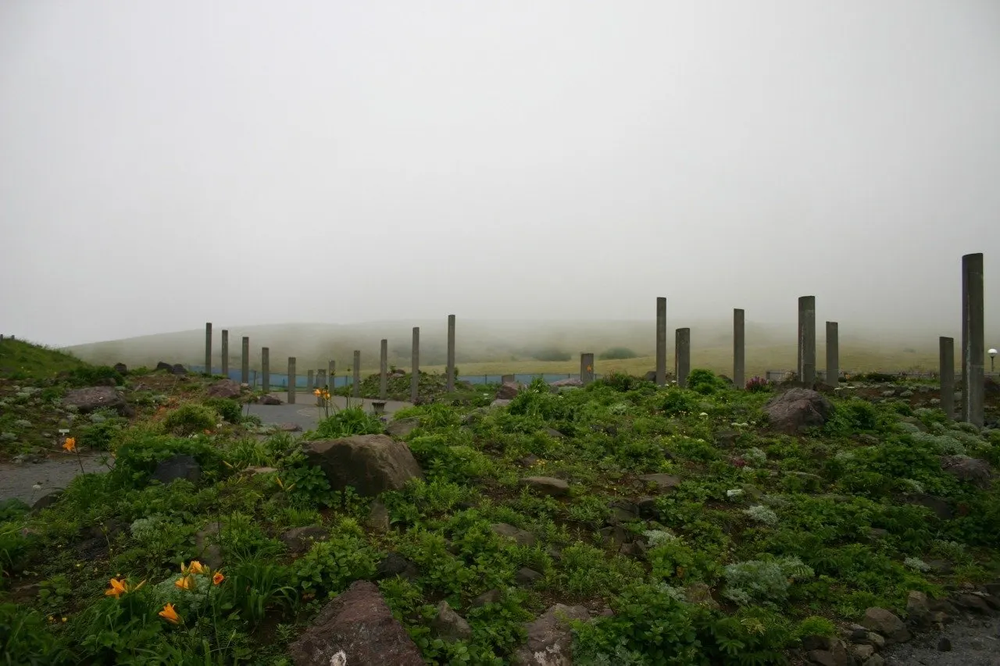
Rebun Kozan Botanical Garden